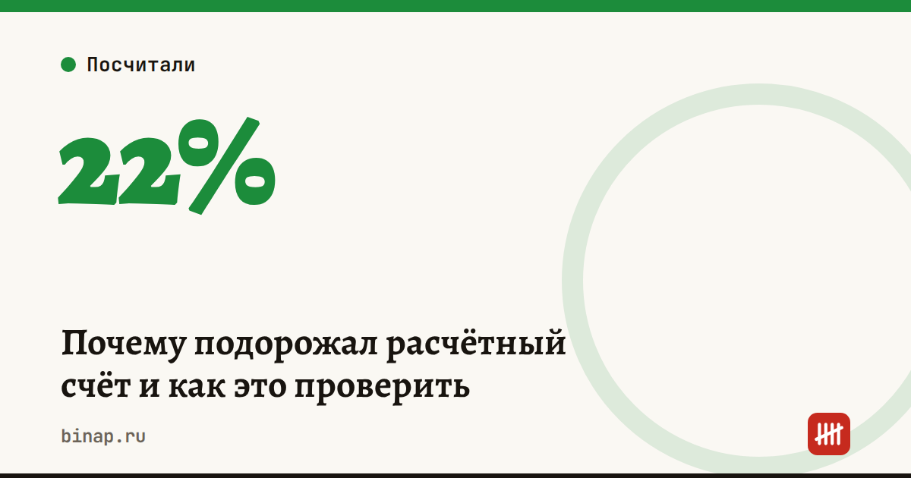

Почему подорожал расчётный счёт и как это проверить

Если с начала года обслуживание счёта стало дороже, дело не только в самом банке.
Что произошло: с 1 января 2026 года отменена льгота по НДС на эквайринг и обслуживание карт, а основная ставка НДС выросла с 20% до 22%. Дорожают услуги вокруг счёта — эквайринг, процессинг, карты. Банки часто выставляют комиссии пакетом, поэтому клиент видит просто «дорогой РКО».
Как проверить, за что вы платите:
- Выгрузите выписку за прошлый месяц и отфильтруйте все списания банка.
- Разложите их по строкам: абонентская плата, платёжки, снятие наличных, эквайринг, карты, СМС и сервисы.
- Посчитайте долю эквайринга: при выручке по картам 1 млн ₽ в месяц разница в ставке 0,3 п. п. — это 3 000 ₽ в месяц или 36 000 ₽ в год.
Что сделать: прогоните свои обороты через тарифы 3–4 банков. Смотрите не на абонентку, а на итог за месяц с эквайрингом. Как сравнивать — в разборе «Где открыть счёт ИП».